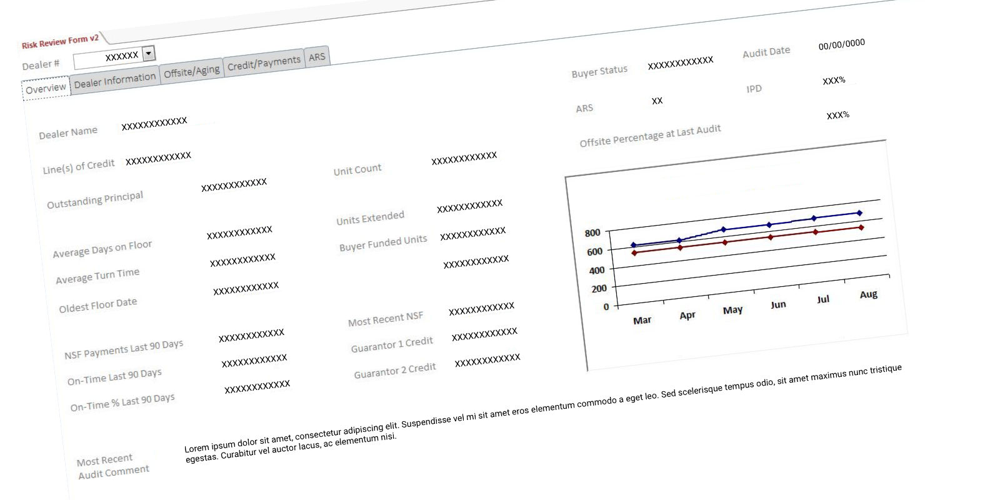
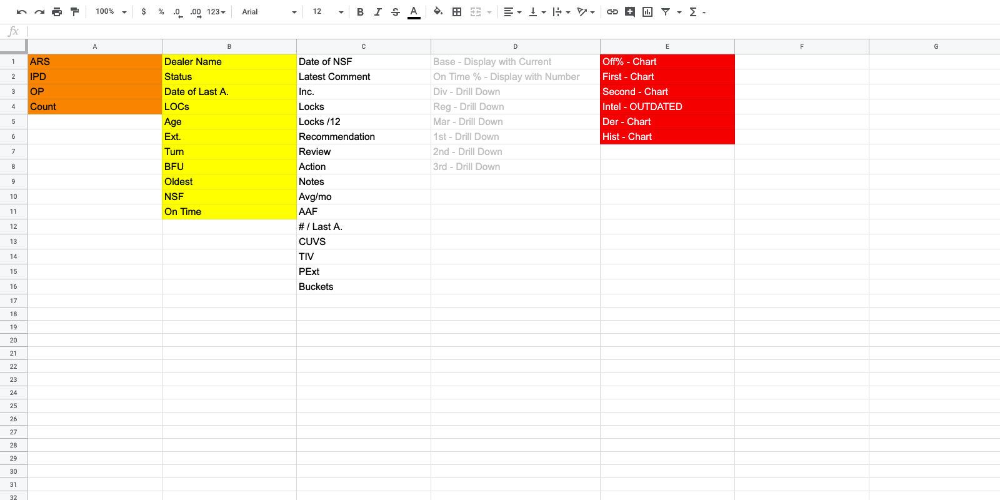
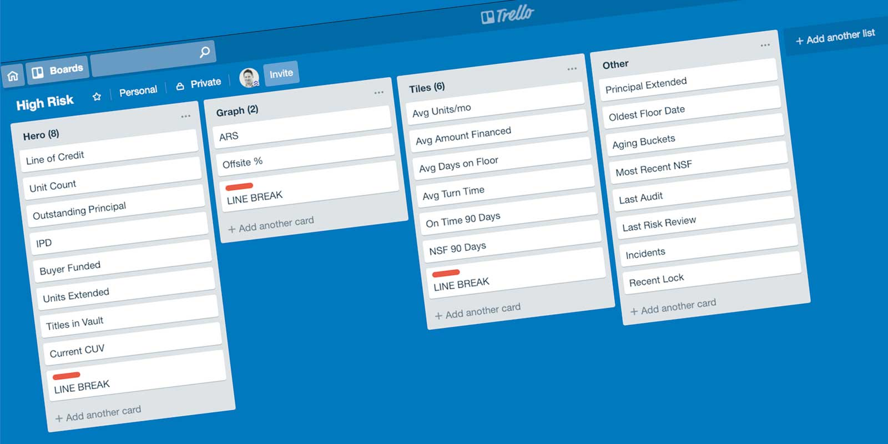
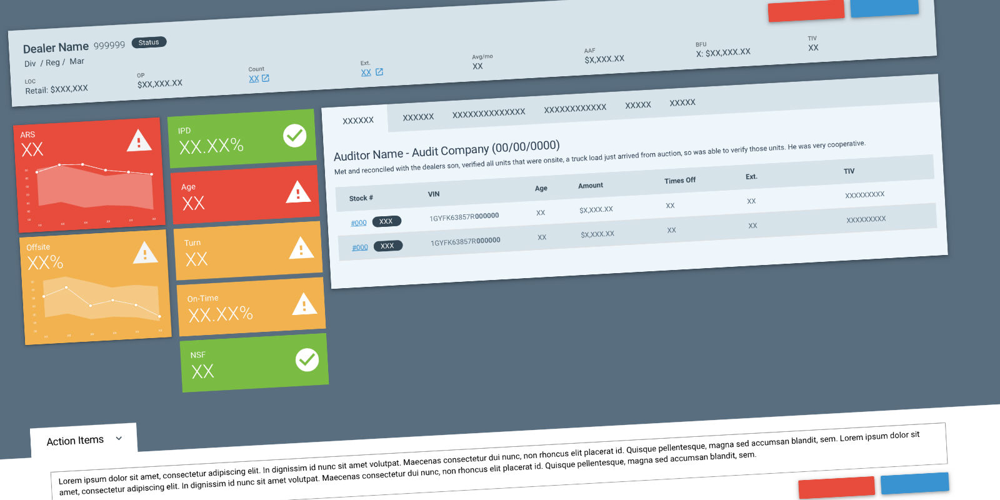
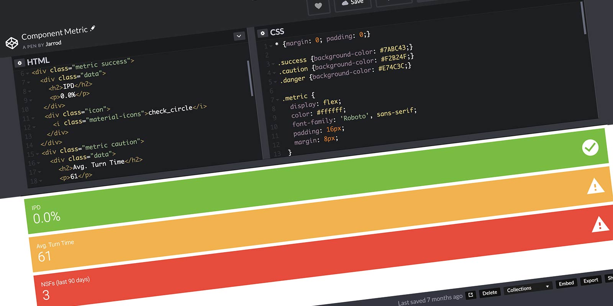
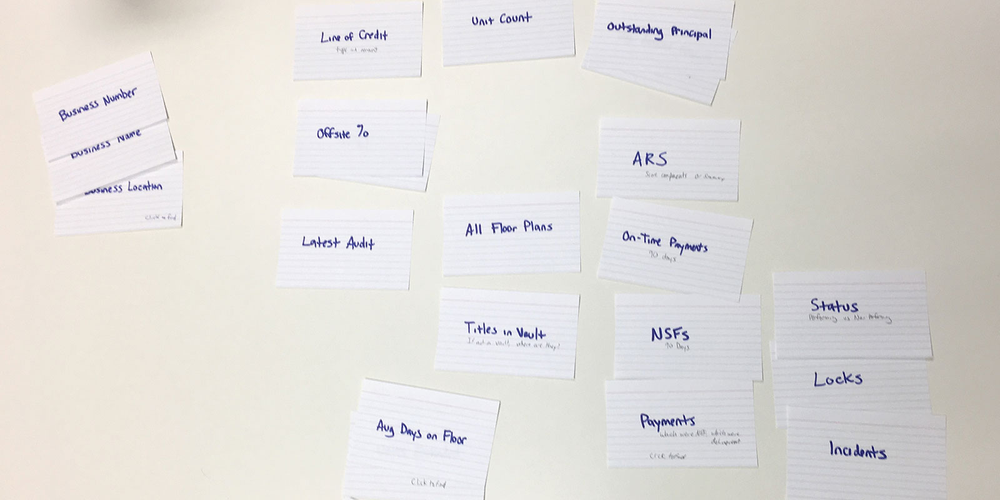
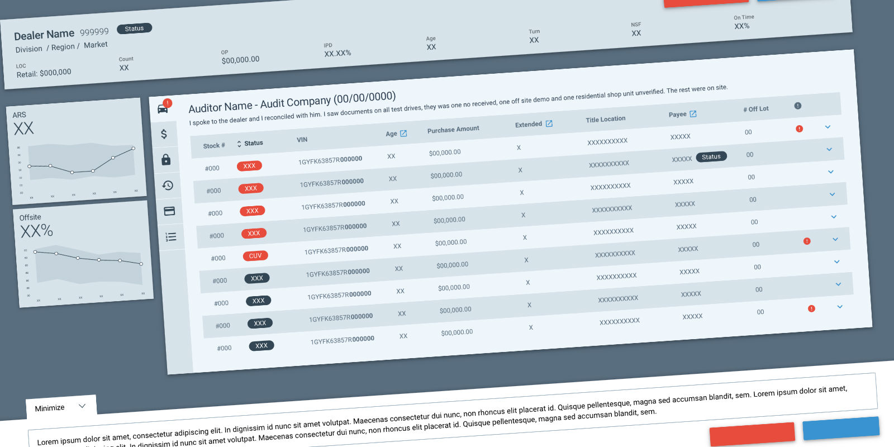

High Risk Queue
Where Information Hierarchy and Data Visualization meet
The Challenge
A High Risk Analyst looks at current and historical data to determine if automotive dealers are demonstrating signs of risky or suspicious behavior. The analyst determines the appropriate next steps, up to and including terminating the relationship.
The tool they relied on was built by an analyst, for analysts… in Microsoft Access. It was maintained by one person, and the company was also moving from WebFOCUS to SSRS reporting. Building something better was overdue.

Pre-Kickoff Insights
June 26, 2018 I was approached by a Product Delivery Manager (PDM) who requested I mock-up a feature for the upcoming sprint. I was asked to present the mock-up to the dev team six days later.
Role
I was the lead researcher and designer on this accelerated project.
Un Understand
Defining the Problem
Working directly with internal users is extremely beneficial. I was able to shadow a High Risk Analyst, observe their workflows first-hand, and look at all of the existing data points across each tab.
My first step was documenting the existing data. I highlighted data displayed more than once. Duplication shows a lack of information hierarchy, common for a tool built by users solving their own problems without a design lens.
The most important data points became apparent by how often they were displayed. With an understanding of the data, the next thing I needed to solve was how to display it within the design system.

Reframing the Problem
To hit this queue, the dealership either has a high ARS (determined by an algorithm) or a large number of vehicles unaccounted for (offsite). Analysts must decide whether to create an incident… recommend a dealer consult… or accept this level of risk.
I created a Trello board to start mapping data to a design idea. I organized the data points around how the data would be presented. The hero component had room for eight data points about the dealer, ARS and Offsite as the focal point, supporting data points, and tieriary data points that could live behind a click.

Si Simplify
Proposed Solution
I proposed a hero component that displayed dealer-specific data, to frame the information below. I used an “F” pattern layout to help highlight the major areas of concern. The two largest contributing factors… the ARS and Offsite graphs stacked on the left. The secondary data points were given next priority. I proposed a horizontal tab structure for digging deeper into trouble areas. Analysts would write their recommendations in a section anchored to the bottom.

A New Component
While I was happy with the design and direction, I knew the Design System was missing a component for the color-metric bar. I opened CodePenlaunch and built the missing component.

Al Align
Early Validation
I presented my design to the team on July 2nd. The reaction from the High Risk analysts was encouraging. Pointing to the color-metric bars, the manager said:
I could make 80% of my decisions with this section right here.
That’s the kind of validation that matters. But the presentation also surfaced something I hadn’t accounted for… the spec I was given was missing two attachments. Additional data points needed to be incorporated into the design.
The Card Sort
With new data points on the table and strong opinions across the team about what deserved the most prominence, I ran a card sorting exercise. Moving the data around without the pressure of a design conversation gave the team a cleaner way to express their priorities. The results helped me reprioritize the data, incorporate the missing pieces, and better understand the decision-making process of the analysts.

Revised Design
With the new information and insights from the card sort, I revised the design. The ARS and Offsite graphs were still the focal point, but this iteration needed to include the dealer’s inventory. The supporting data had to be reorganized to support the new information.

Va Validate
User Testing a Prototype
With a revised design in hand, I built a clickable prototype in InVision. I scheduled time with four analysts and gave each one the same task… using historically accurate dealer data, they were asked to either “Escalate” or “Pass” a dealer. We found a few very minor issues and talked through some edge cases.
Takeaways
The project was eventually cancelled after changes to the department made it obsolete. But the thinking behind it… understanding the data before touching the design, surfacing duplication as an information hierarchy problem, and validating priorities with a card sort… those are approaches I carry into every data-heavy interface I work on.
Things I Learned
- Always engage with users… make sure they’re getting the solution they need
- Articulating design decisions can be challenging
- The benefit of understanding the data when no two users behave the same